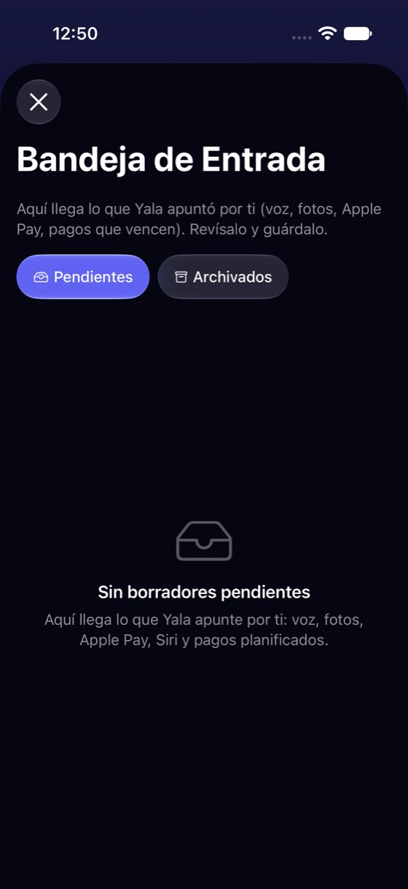
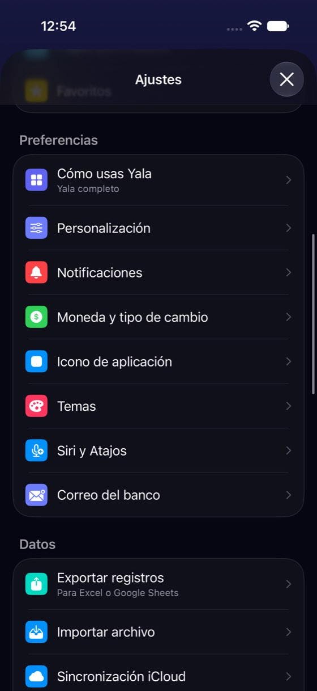
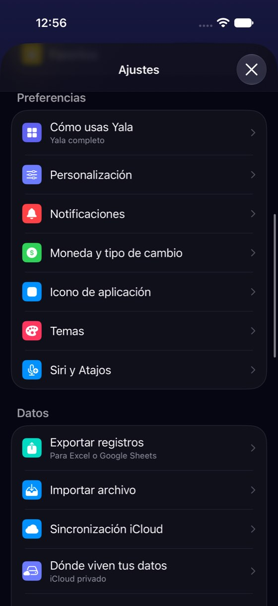
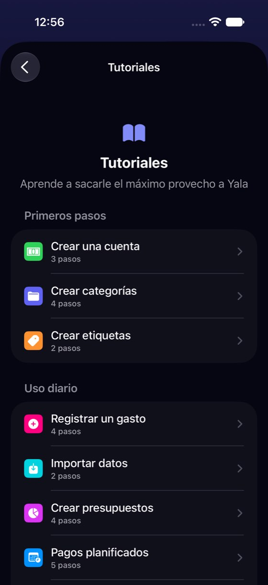
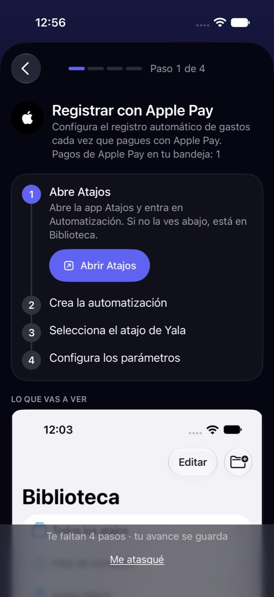
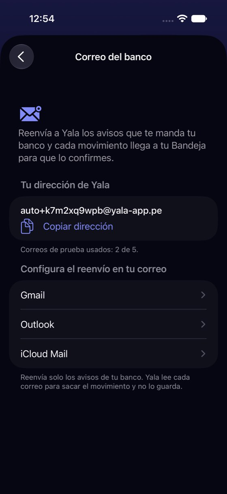

Lo que se apunta solo vive en tres sitios y ninguno dice si funciona
Hoy
Capturas del simulador (app de origin/2.3, semillas de prueba). Pasos hoy: correo y Siri: 3 toques desde el Panel (avatar, desplazar, fila); Apple Pay: 5 (avatar, desplazar hasta Ayuda, Tutoriales, desplazar, fila); el correo con iCloud: no se llega






De dónde sale
- Captura Capturas 60 y 68: con sesión en la nube, «Correo del banco» aparece debajo de «Siri y Atajos»; sin ella (iCloud), no está.
- Captura Capturas 70-72: Apple Pay está en Ayuda › Tutoriales › «Registrar con Apple Pay», tercera pantalla.
- Captura Capturas 01 y 30: el texto de la Bandeja y el de la Bandeja vacía nombran fuentes distintas; ninguno, el correo.
- Código
BankEmailForwardingView.swift:18-20: la fila exige datos en la nube y sesión;ProfileView.swift:1711-1728: las dos filas van tras «Temas». - Código
BankEmailAddressInfo.lastReceivedAtMsllega del servidor y no se pinta en ninguna vista (solo aparece en los datos de prueba,BankEmailForwardingView.swift:75). - Código
SiriShortcutsView.swift:204-210: «Registrar pago de Apple Pay» se lista sin enlace a la guía (TutorialsListView.swift:70).
Las opciones
De 3 a 5 alternativas con el mismo caso. Desliza cada recorrido; el anillo cian marca dónde toca Lucía.
«Que se apunte solo» dentro de la Bandeja
La Bandeja es donde Lucía ve lo que llega solo, así que ahí se conecta lo que falta. Vacía, enseña las entradas con su estado y un botón; con borradores, una línea arriba dice de dónde llega lo de hoy y deja conectar más. Cada fila abre la guía que ya existe.
Bandeja de Entrada
Aquí llega lo que Yala apunta por ti: voz, fotos, Apple Pay, Siri y pagos planificados.
Bandeja de Entrada
8 pendientesA favor
- Responde la pregunta donde se hace: al ver que «esto llegó solo», o que no llega nada.
- No hay pantalla nueva: cada fila abre la guía de hoy.
- Quien no sabe que existe el correo del banco lo descubre sin ir a Ajustes.
En contra
- La Bandeja crece arriba: una línea más antes de los borradores.
- El estado «Listo» o «Funcionando» exige que la app sepa medirlo (correo sí; Apple Pay y Siri solo «llegó algo esta semana»).
Una sola pantalla «Lo que se apunta solo», con estado
Ajustes pasa de dos filas sueltas entre «Temas» y «Siri» (más una guía escondida en Tutoriales) a una fila: Lo que se apunta solo. Dentro, las cuatro entradas con lo que se sabe de cada una: el correo, cuándo llegó el último aviso; Apple Pay, los pagos de la semana; Siri y los pagos planificados, si se usan. Si una no se puede usar (el correo sin la nube), lo dice y por qué.
A favor
- Una sola respuesta a «¿qué se apunta solo?» en vez de tres sitios con tres estilos.
- Lucía ve si de verdad funciona (el dato del último aviso ya llega del servidor y hoy no se pinta).
- Con iCloud, el correo deja de ser invisible: se explica por qué no está.
En contra
- Mueve dos filas de Ajustes y saca Apple Pay de Tutoriales: hay que avisar en Novedades.
- Medir «funcionando» en Apple Pay y Siri solo puede ser «llegó algo»: iOS no cuenta si la automatización existe.
Una tarjeta en el Panel que propone conectar
Mientras ninguna entrada automática se haya usado, el Panel enseña una tarjeta «Deja que Yala apunte por ti» con tres botones. Se cierra para siempre con la X o al conectar la primera.
A favor
- La ve quien nunca entra a Ajustes ni a la Bandeja.
- Encaja con la tarjeta de Primeros pasos que ya existe.
En contra
- Otra tarjeta en el Panel, que ya tiene avisos y la oferta Pro el primer día (fricción F10 de la revisión del usuario nuevo).
- No resuelve dónde vive cada cosa después: al cerrarla vuelven los tres sitios.
Solo textos y enlaces entre las pantallas de hoy
Sin mover nada: la Bandeja dice las mismas fuentes en sus dos textos (y nombra el correo del banco), su estado vacío lleva «Configurar», Siri enlaza la guía de Apple Pay desde «Registrar pago de Apple Pay», y el correo del banco enseña la fecha del último aviso, que ya llega del servidor.
Bandeja de Entrada
Aquí llega lo que Yala apunta por ti: correo del banco, Apple Pay, Siri, voz, fotos y pagos planificados. Revísalo y guárdalo.
A favor
- Lo más barato: textos y dos enlaces.
- No cambia dónde vive nada: nadie tiene que reaprender.
- Corrige la incoherencia entre los dos textos de la Bandeja.
En contra
- Siguen siendo tres sitios; el correo sigue invisible con iCloud.
- Sin estado: Lucía sigue sin saber si funciona.
Lado a lado
La última pantalla de cada recorrido, frente a hoy.
Bandeja de Entrada
8 pendientesComparación
| Opción | Pasos para el caso (maqueta) | Esfuerzo | Riesgo | Reabre |
|---|---|---|---|---|
| Hoy | correo y Siri: 3 toques desde el Panel (avatar, desplazar, fila); Apple Pay: 5 (avatar, desplazar hasta Ayuda, Tutoriales, desplazar, fila); el correo con iCloud: no se llega | — | — | — |
| A1 · «Que se apunte solo» dentro de la Bandeja | 1 toque desde la Bandeja vacía hasta la guía (hoy: 4-6 desde el Panel, por Ajustes o Ayuda) | medio | bajo | — |
| A2 · Una sola pantalla «Lo que se apunta solo», con estado | 2 toques desde Ajustes hasta cualquiera de las cuatro (hoy: correo y Siri 1, Apple Pay 3 por Ayuda › Tutoriales) | medio | bajo | — |
| A3 · Una tarjeta en el Panel que propone conectar | 1 toque desde el Panel (solo mientras la tarjeta está) | bajo | medio | — |
| A4 · Solo textos y enlaces entre las pantallas de hoy | 1 toque desde la Bandeja vacía; lo demás igual | bajo | bajo | — |
Lente de perfiles
Perfiles simulados, no entrevistas Los siete perfiles de la revisión del usuario nuevo, usados como lentes. riesgo alto de trabarse · medio · bajo.
| Perfil | Hoy | A1 | A2 | A3 | A4 |
|---|---|---|---|---|---|
| P1 · Migrante de Excel | no sabe si su banco llega | ve qué entra solo | una lista con estado | la ve | sin estado |
| P2 · Principiante abrumado | no sabe que existe | tres cosas nuevas a la vez | explica cada una | otra tarjeta más | — |
| P3 · Anotador rápido que no lee | no lo busca | una línea | no le estorba | la cierra sin leer | — |
| P4 · Experto de otra app | lo busca en la Bandeja y no está | lo que esperaba | lo que esperaba | — | dispersa |
| P5 · Llega por una invitación de grupo | — | no tiene entradas personales | — | — | — |
| P6 · Varias monedas y tarjeta | su fuente principal está escondida | correo y Apple Pay juntos | ve si su banco llega | — | no sabe si su banco llega |
| P7 · Texto grande, a veces en iPad | tres sitios que recorrer | tarjeta más alta con texto grande | lista simple | Panel más largo | — |
Recomendación: A2
Una pantalla «Lo que se apunta solo» con el estado de cada entrada, y el botón de la Bandeja vacía (de A1/A4) llevando a ella. Es la que responde las dos preguntas del caso —¿dónde se conecta? y ¿funciona?— sin sumar avisos al Panel. Lo barato de A4 (textos de la Bandeja y el último aviso del correo) puede ir antes, solo.
Qué decide Jürgen
- ¿Una pantalla única en Ajustes (A2), o la Bandeja como sitio para conectar (A1)?
- ¿Apple Pay sale de Tutoriales? Hoy es lo único de la zona que vive en Ayuda.
- Con iCloud, ¿la fila del correo se enseña explicando que necesita la nube, o se sigue ocultando?
- ¿Se pinta ya la fecha del último aviso del banco (A4), aunque no se haga lo demás?
Revisión por vistas 2.3 · Bandeja, Yala IA, correo del banco, Apple Pay y Siri. Maquetas en HTML con datos ficticios: no son la app. Pasos contados sobre las maquetas; los de «Hoy», en el simulador o en el código citado.